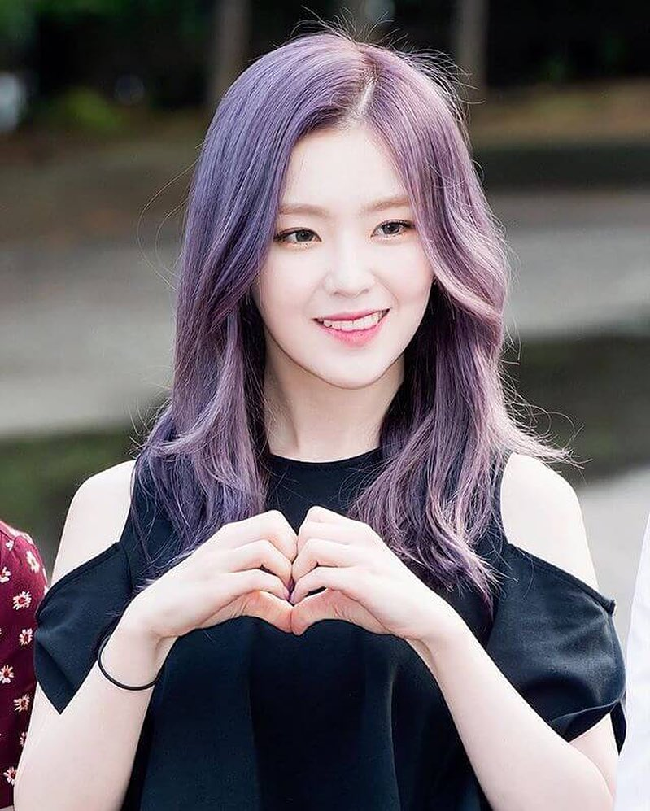
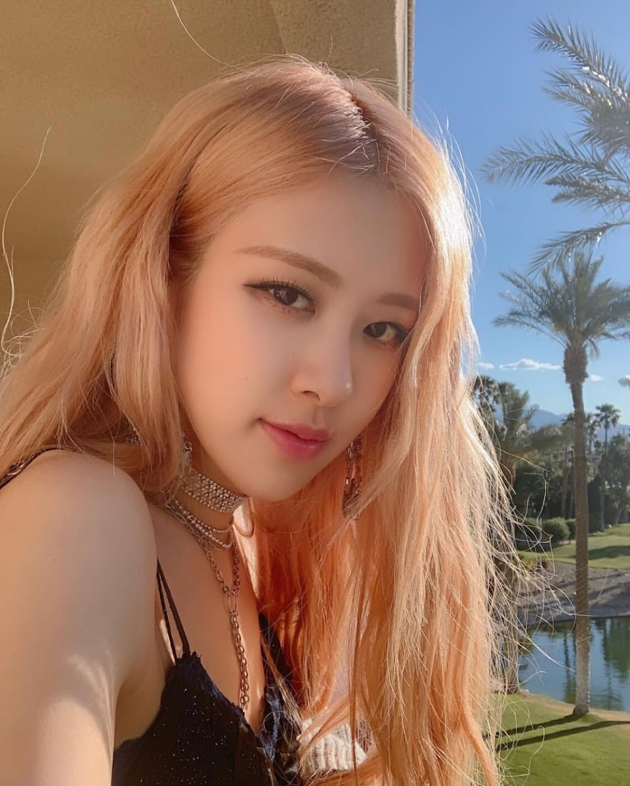

top 10 kpop beautiful girl idol
- irene(korean)
- tyuzu(taiwan)

Mới đây, Red Velvet đã trở lại với full album thứ 3 - Chill Kill. Những
thế mạnh về mặt concept, hình ảnh lần nữa được phát huy và thu hút sự
chú ý không nhỏ từ fan nhạc cũng như giới chuyên môn. Ở năm thứ 9 hoạt
động, Red Velvet và đặc biệt là ''đệ nhất visual gen 3'' Irene chưa bao
giờ đánh mất phong độ nhan sắc. Trong sự kiện Superbound Festival vừa
qua tại Thái Lan, Irene lần nữa gây sốt MXH với ngoại hình điểm 10,
xứng danh ''original visual" (nhan sắc nguyên bản).
rose

Rosé (로제) tên thật là Park Chaeyoung (박채영) sinh ngày 11 tháng 2 năm
1997. Cô là thành viên của nhóm nhạc nữ nổi tiếng BLACKPINK thuộc YG
Entertainment. Dưới đây là bài viết chi tiết profile Rosé – tiểu sử,
sự nghiệp và những điều thú vị về cô ấy.
information
info